| ID | prefer | pet | excel | score | holiday |
|---|---|---|---|---|---|
| 102 | Chips | Dog | 5 | 99 | Europe (except UK) |
| 139 | Soup | Dog | 7 | 150 | Europe (except UK) |
| 27 | Chips | Dog | 8 | 120 | UK |
| 240 | Soup | anaconda | 9 | 314 | Other (the pole? the moon??) |
| 232 | Soup | Robot Dog | 3 | 180 | Asia |
Distributions and types of data
data skills
beginner
NoteSession outline
In this session, we’ll talk first about some of the types of data that you’ll encounter in health and care. We’ll then move on to introduce the idea of a distribution, which is a way of understanding and describing how a value varies. We’ll illustrate both of these areas using a small dataset generated by the members of the KIND network. We’ll then show how understanding those distributions helps us interpret data, and discuss some of the key tools that we’ll use to safely and effectively work with distributions.
Sentence aim
To introduce the idea of the distribution, show some examples from data, and relate those examples to some simple theory describing how distributions work in order to help participants make sense of their data.
Exercises
- E1: looking at types of data
- E2: the histogram
- E3: an example distribution
- E4: looking more closely at our distribution
- E5: homework - take an extended dataset
Data
322 data points generated by the KIND network during March 2026. Download dataset as .xlsx (or as .rds).
Key concepts
- types of data - numerical, ordinal (orderable), and categorical (non-orderable)
- the empirical distribution
- an introduction to histograms
- n, range, skew, outliers
- a normal distribution and bimodal distribution, as examples of theoretical distributions
Introduction to types of data
Imagine that we are measuring some value in a group of people. In health and care, that might be something like:
- height in cm
- satisfaction with our service as either high, medium, or low
- any previous illnesses
Each of these measurements will make different types of data:
- we record height in cm with an ordinary number, and an individual value can (theoretically) fall anywhere
- satisfaction can be only be “high”, “medium”, or “low”, and nothing else
- and past medical history is a list of any past diagnoses (or none) in words
Those three examples show us the most important types of data that we ordinarily encounter. We’ll introduce some terminology to help us describe them accurately:
- we describe data like height as data. This is probably the commonest type of data we work with, and is made of ordinary numbers. That means that we can do lots of mathematical work with numerical data, and expect to get sensible answers
- satisfaction is an example of data. In this case, we can rank our data (high is better than medium), but we can’t do maths to it and get sensible answers
- past medical history is data. Here, the categories don’t have a natural ordering
Type of data matters for us when we want to interpret and summarise that data, because each type of data needs to be summarised using appropriate methods. To help us work through that idea, let’s look at some real data:
This data contains some survey responses from members of the KIND network. It contains six columns. One (called ID) is a system generated unique number. The remaining five columns contain responses to the following (fatuous) questions:
- prefer, which are responses to the question Do you prefer chips or soup? (choice)
- pet, detailing answers to What is your ideal pet? (free text)
- excel, scoring How confident are you at using Excel? 1 = not at all confident, 10 = very confident
- score, from What is your highest ever score at Scrabble, Bowling, or anything else where a really good score is about 300 (free number)
- holiday - Where did you last go on holiday? (choice between UK, Europe (except UK), North America, South America, Asia, Africa, Oceania, Other)
NoteTask one: types of data
- download and open the full dataset
- look at the values in the different columns. Can you classify the five non-ID columns as either numerical, ordinal, or categorical data?
- are there any columns which could fit into more than one category?
- could we translate any columns to a different type of data?
The histogram
Look at the values in the excel column in the dataset. If we’re interested in a question like “Are people in the KIND network generally pretty confident with Excel, or not?”, the numbers themselves aren’t that helpful. Just by looking at the raw data, it’s hard to get a sense about what a typical value might be.
There are several ways we could approach answering that question, but most of their details will have to wait for later sessions. However, in a rare bit of jumping ahead, we’ll now introduce a type of graph that’s exceptionally useful for answering those questions: the , which we’re going to introduce early as an especially-helpful tool for thinking about distributions.
Here’s a recipe for producing a histogram:
- Divide your data into ranked groups
- The
excelcolumn contains ordinal data, with confidence scores as whole numbers between one and ten - That neatly suggests a ranking structure: let’s treat each one of the ten numbers as groups in the natural-number-order
- Then count how many values occur in each group
- Finally, draw a graph with bars for each group where the height of the bar is the number of values in each group
We could also do this using the score column. Divide the data into sensible groups. The biggest value here is about 1000, so I think a sensible group would be about 100. That gives us groups of 0-99, 100-199, and so on, giving us about a dozen . Then we count how many values fall into each bin, and plot the result:

NoteTask two: a simple histogram
- please could you try to build a histogram of the Excel data. This can be a paper sketch, an Excel graph, or whatever method you’re technically comfortable with.
- what would be a sensible bin size?
- approximately how many people responded to this question (which we’d usually call )
- can you estimate the minimum and maximum confidence scores in our dataset from your histogram? Together, those values let us calculate the of Excel confidence responses in our survey
Histograms are a brilliant tool for understanding how values vary. But note that they don’t work with everything. As our groups (bins) are ordered, there’s no sensible way of plotting categorical data using a histogram. We’ll come back and talk more about how to plot categorical data in a later session. But for numerical and ordinal data, histograms are exceptionally useful because they allow us to understand the of our values.
A note about histograms: they don’t work for categorical data. We’ll talk about that more later in the course when we introduce bar graphs properly, but to give an overview of the problem, we could try plotting some categorical data, like the column in our sample data asking people if they preferred chips or soup. We could plot those using a bar graph, like the following:
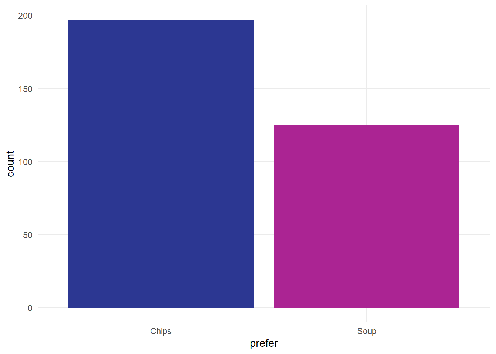
Note that’s not a histogram because that preference data is categorical. That makes our two categories of responses separate, which we indicate in a simple way with gaps between the bars, rather than the continuous distribution that we see in the histogram.
Distributions
Without knowing what’s generally expected, a single value in our dataset doesn’t tell us anything very interesting. We need some context to make sense of an individual number. For values like blood pressure, we often have reference ranges that tell us what a normal blood pressure might be. For other values (like height, or number of years since retirement) we generally have some clear idea of what a normal number might be from our daily experience. But for other values (like Excel confidence) most of us don’t have a top-of-the-head idea about what a normal expected range of that number might be. Say Susan (one of our colleagues) rates her confidence with Excel at 8. If we compare that to the KIND network’s distribution of Excel confidence:
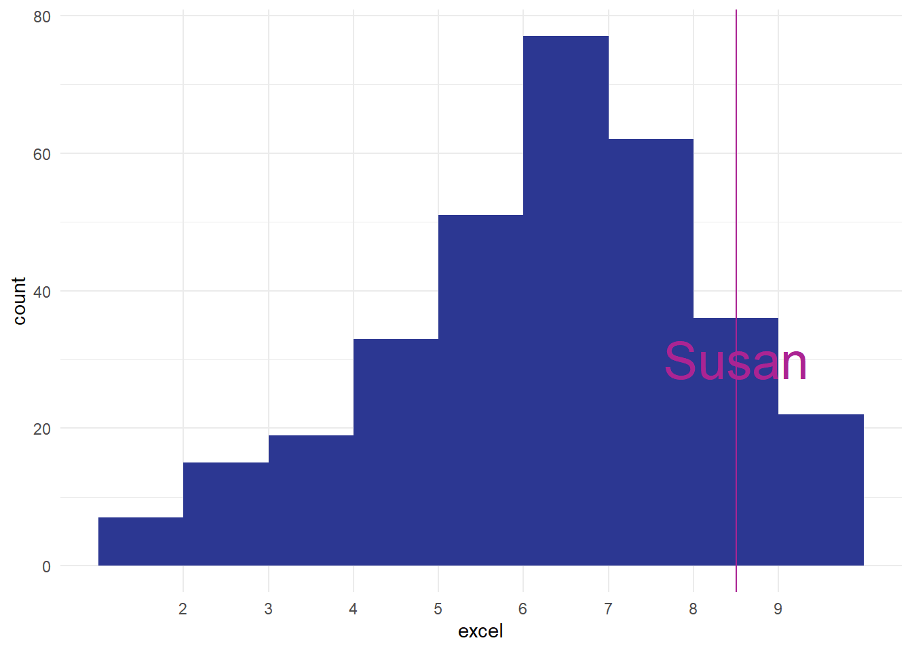
That tells us that Susan is one of the most confident Excel users in our data. That’s the power of a distribution: it shows you how the other values that you’ve measured are, and lets you compare and understanding those values quickly and easily. In fact, this sort of way of looking across all the values we have is so important that we should introduce a key piece of jargon to help us understand it more fully. To a statistician, what we’ve drawn is the empirical frequency distribution of Excel confidence in the network.
- empirical = made by measuring
- frequency = how often some value occurs in those measurements
- distribution = how those measurements are spread out
The reason the empirical frequency distribution is important is that it gives us a way of understanding how our (Susan’s) Excel score compares to those in other people. At its most simple, just seeing the graph of how frequencies are distributed tells us a lot about how to understand our one case. For example, how does Susan compare to the group?
NoteTask three: an example distribution
- remind yourself about the range and the n of the dataset which you estimated in the previous exercise
- can you estimate, from your histogram, how many people in the dataset had a level of Excel confidence as good (or better) than Susan? How many were less confident?
- what would be a typical estimate of how confident are most people in the network about Excel?
We’ve now calculated quite a lot of information about our Excel confidence scores:
- we estimated to be about 320 responses in total
- we thought respondents had used the full of 1-10
- we estimated that about 120 people had a score of 8 or more, matching or exceeding Susan’s confidence
- we thought that about 200 people had a score of less than 8
Together, that tells us a lot about Susan’s score in the context of our data.
Outliers
Imagine how we might have felt about Susan’s score of 8 if our distribution had looked like this, for instance:

Impressive, obviously, especially if you trained Susan, but also possibly worrying. I think in real-life we’d probably be concerned about seeing that Susan was such an from the main group, and that might cause us to go off and investigate if something has gone wrong with our measurements somewhere. The aim of this section is just to introduce the word outlier at piece of terminology, and to talk very briefly about what might/should be done about outliers. Outliers are a fact of life, and most datasets have them. For instance, in our score data, we’ve got a couple of outliers from people who awarded themselves enormously high-scores:
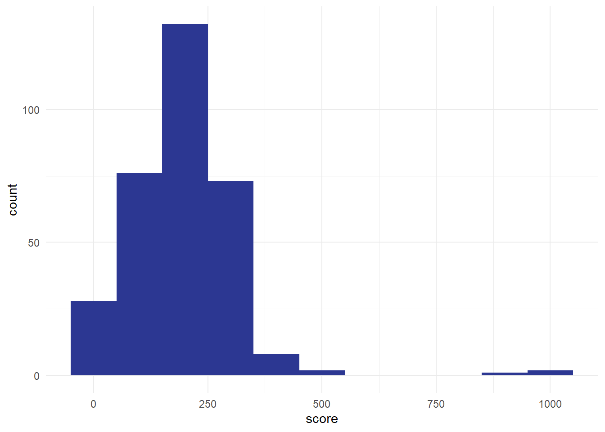
Most of our values are less than 500, but we’ve got three values over 800. These three are outliers too. For this session, the most important advice about outliers is to make sure you check your data for them, ideally by plotting the values. I’ve mentioned before how useful histograms are for helping us understand our values, but they also allow us to screen for odd values very efficiently. That’s why I’ll almost always make a quick histogram of some data before analysing it, just to make sure that I know what I’m dealing with. We’ll talk more about ways of handling outliers in the exercise below.
Skew
One other feature of our excel distribution: it’s . That means that the shape of our histogram isn’t symmetrical. We’ve got a ‘lump’ towards the right-hand side of the distribution, with a long tail of comparatively few observations at lower confidence scores:
[1] 6.779503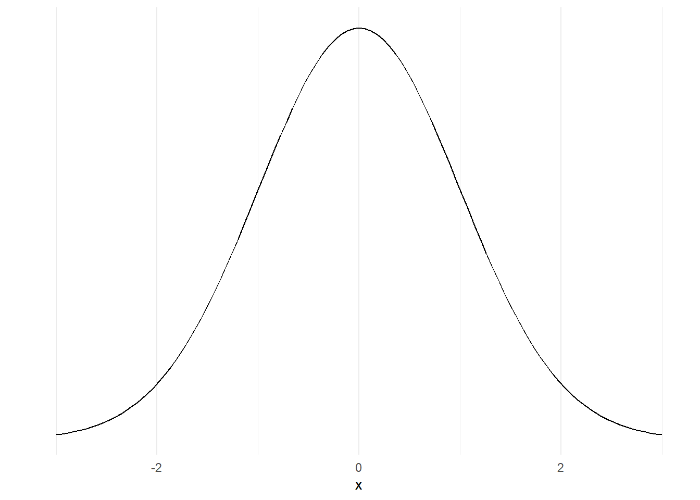
That means that our average value isn’t quite in the middle of our range of data, and that’ll have important consequences that we’ll see in later sessions. For now though we’ll just introduce the term, and mention that it can be important to know that your data is skewed. Again, another great reason to make a quick histogram when you’re looking at some new data.
NoteExercise four: looking more closely at our distribution
- what might explain outliers in a dataset? List as many reasons as you can think of.
- what might you do about outliers?
- our Excel data is left-skewed, and our scores data is right-skewed. Some authors claim that right-skewed data is very common in health contexts (e.g. “Such data are common in medical research” Petrie and Sabin (2000, 14)). Why might right-skewed data be more common in health than left-skewed?
Theoretical distributions
A final new topic for this session: there are ways of understanding distributions mathematically. One very well-known example is the :
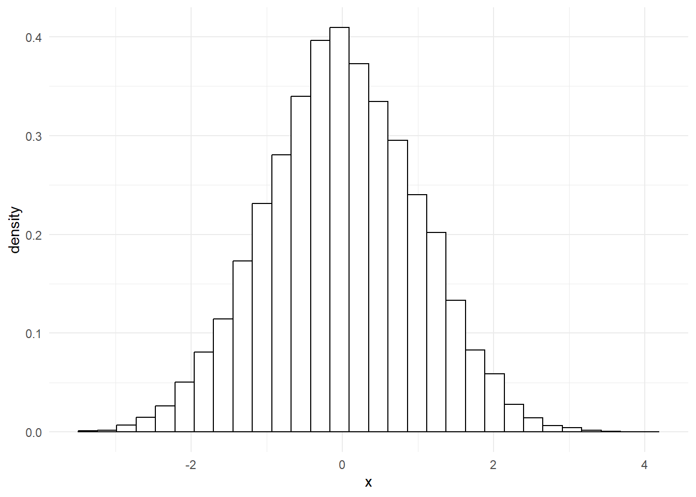
That’s different from the distributions that we were looking at earlier, because it’s not made by sticking together lots of data, but instead made using an equation. We won’t go into the details of that here, but instead will concentrate on why that matters. Because it’s a mathematical model, we can very precisely understand the characteristics of that normal distribution. For example, we know that about 95% of the area under that curve sits between those numbers -2 and 2 on the x-axis for mathematical reasons we won’t get into here.
If we take some data that has a similar shape, we can make similar claims about our data. For example, take this histogram:
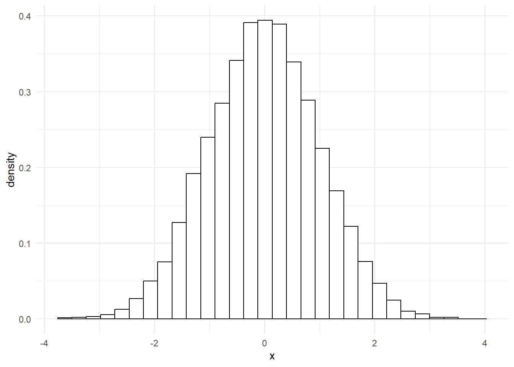
That’s incredibly close to a normal distribution. In fact, if we overlay one over the top, we’ll see that our data fits almost perfectly.
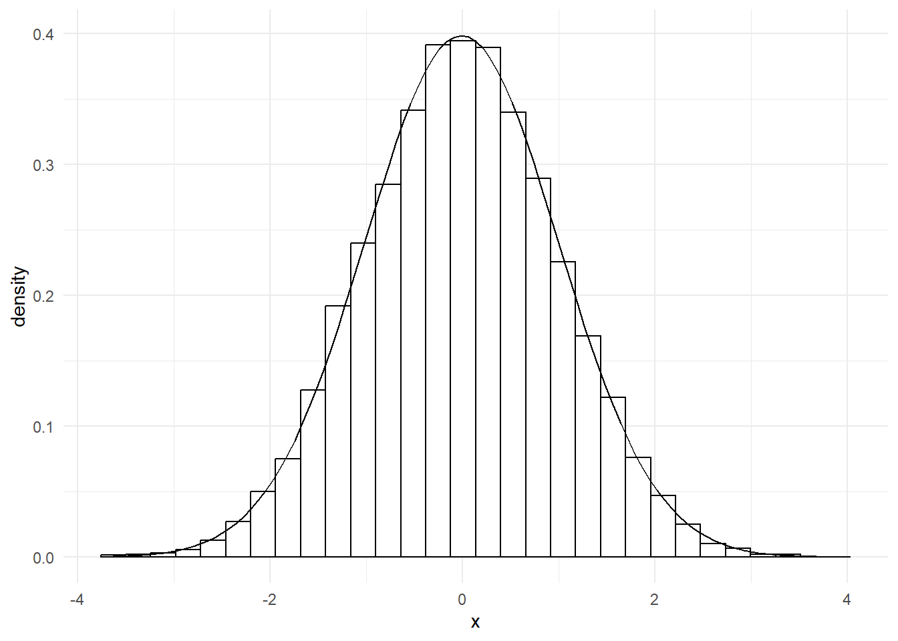
That means we can now say something about our data too: 95% of our data points lie between -2 and 2. That’s very useful, as we’ll see in later sessions.
Although the normal distribution is extremely important, and is probably the most common theoretical distribution that you’ll encounter, it isn’t the only theoretical distribution that you should know about. Especially in health work, many values appear on a :
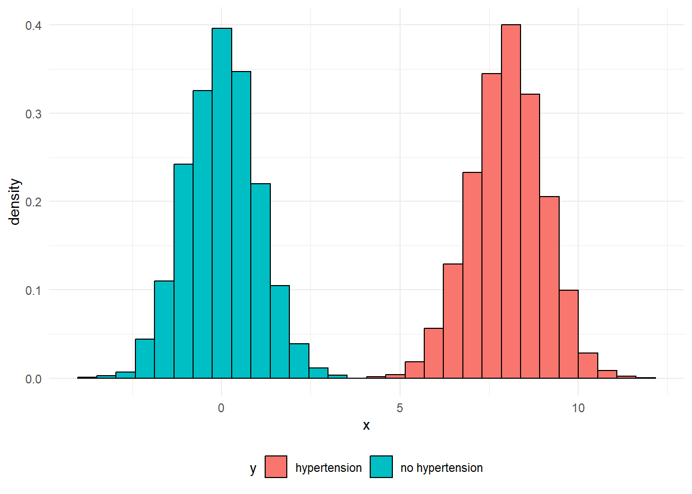
That’s a common pattern in lots of illnesses. For example, with a bit of exaggeration, we could produce something like this to show how blood pressure values might appear in a population with lots of high blood pressure:
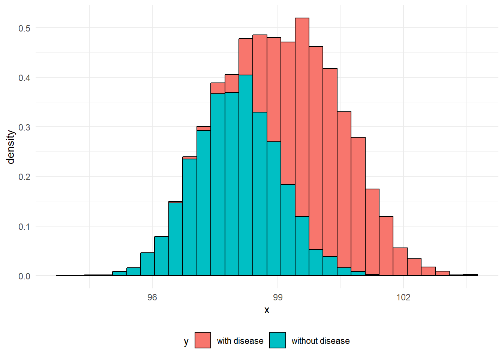
Effectively, each of these two peaks are just normal distributions. It’s easy to understand what might be going on in cases like these where there’s clear blue water between the two peaks, but do note that a more blended picture is commonly found in practice. For example, when we measure biomarkers in the blood to help detect disease, it’s common for the range of values found in people with the disease to overlap the range of values found in people without the disease:
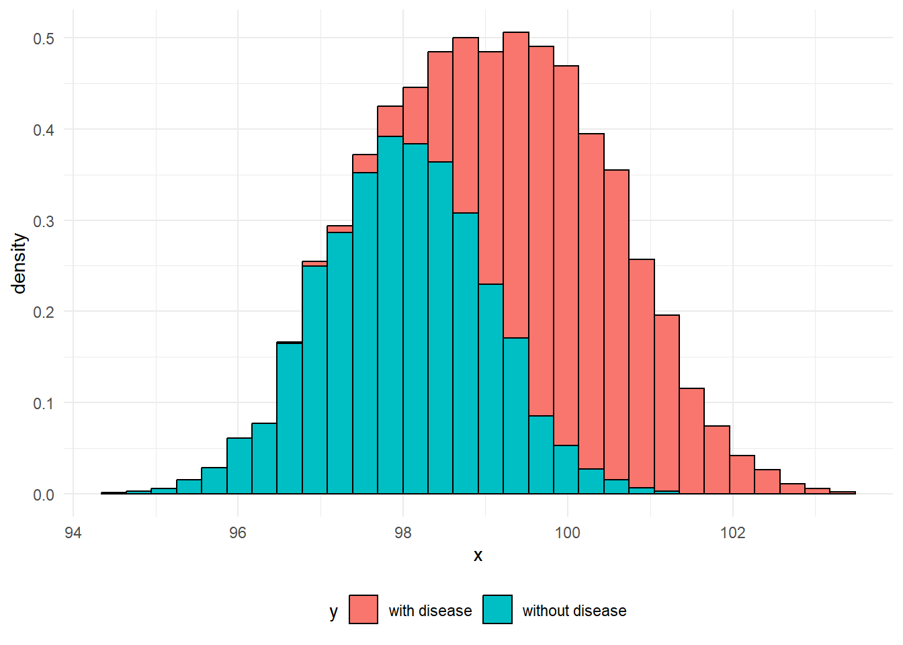
NoteExercise five: extended data
From the previous session, we had some data about care home sizes. Here’s a group of four histograms, by different type of care home:

And a consolidated version for all the care homes in Scotland:
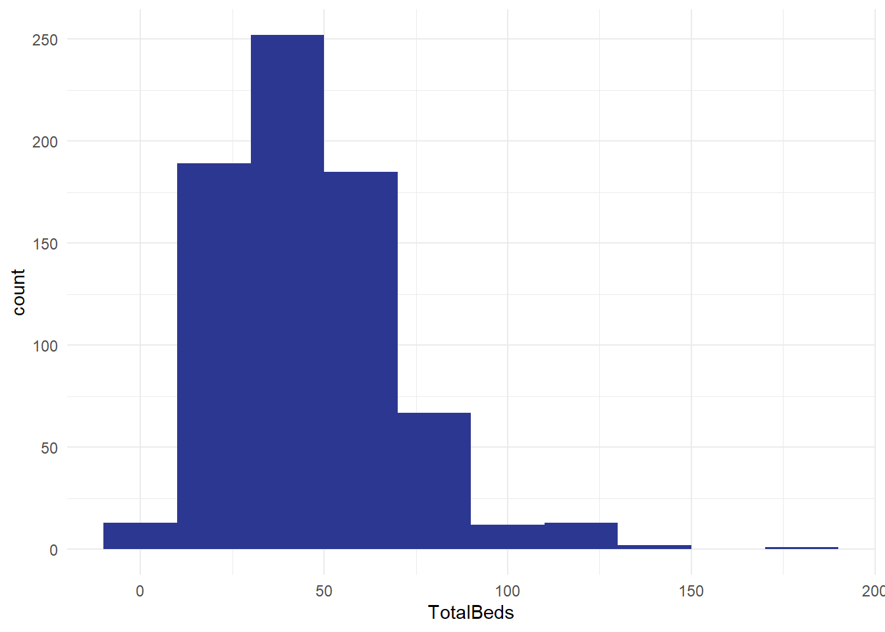
- how do the histograms vary? Apart from the aggregation, are they set up in the same way?
- what does this tell you?
- what other distributions might you like to build from this national dataset of several hundred care homes?
NoteGlossary
bimodal distribution
Theoretical distribution with two peaks
categorical
Non-orderable data, such as names or addresses
coding
The method used to translate observations into data. For example, we could use a pain scale to translate individual reports of discomfort into a standard ten-point score.
data dictionary
A metadata description of the variables our dataset contains that describes any key assumptions necessary to safely create and use that data
datafying
The process of making decisions about how to record the activities of a system as data. For example, if we’re looking to collect data about the number of phone calls our service receives a week, we’d need to decide how to define a week (midnight Monday to Monday? Any rolling 168 hour period?) and how to count phone calls (Do we include missed calls? Calls of less than 1 minute?)
empirical
Made by measuring, and often used as the opposite of theoretical
empirical frequency distribution
The frequency with which each observation in our dataset occurs
frequency
How often some value occurs in a group of measurements. This can either be an absolute frequency (expressed as a count of the number of values) or a relative frequency, usually expressed as a percentage
histogram
Type of graph produced by grouping values into ranges (usually known as bins), then counting the number of values in each bin, then plotting the counts for each range
mean
A way of calculating an average by dividing the total of a variable by the total number of observations
metadata
Data about data. For example, the file size of a csv file, the number of rows in an Excel spreadsheet, or a note that the ISO8601 definition of a week was used in our data collection are all varieties of metadata
n
The total number of observations in a dataset
normal distribution
Also known as the bell curve, this is a theoretical distribution that is centred on the mean, symmetrical, and where just over 95% of the total range of values falls within two standard deviations of the mean
numerical
Data that consists of ordinary (cardinal) numbers that can be manipulated mathematically. Can be either discrete (one from a defined range of values, like school year), or continuous (like weight, any possible value).
observation
A collection of measurements of different variables for one item in our dataset. For example, if we collected daily counts of the number of new patients and discharged patients for a hospital site, each day would be a separate observation
ordinal
Orderable data. Most numerical data can be considered ordinal because it can be sensibly ranked. Would also include values with a natural ranking, such as month, or day of the week, but beware the local extent of some ranking practices.
outlier
Values of a variable that appear to not fit in with the main body of the data. They might represent genuinely exceptional cases, or might be the result of errors during data collection or tidying
range
The difference between the smallest and the largest value of a variable
skew
A term describing where the majority of observations in an empirical frequency distribution lie. Skew describes data where the data is broadly non-symmetrical about the mean. If observations are clustered to the left of the mean, the data should be described as right-skewed, whereas if observations are closely clustered to the right of the mean then it should be described as left-skewed
standard deviation
A measure of spread from the mean
tidy data’
A simple method for standardising the structure of data. This was initially developed to help analysts working in R, but is generally applicable to most systems. See our beginner-level Excel session about tidy data.
type
A way of referring to the sort of data we’re dealing with. While there are several different possible classifications, for this course we discuss numerical, ordinal, and categorical data as being the most important types.
variable
A collection of measurements of one specific characteristic of our system. For example, if we collected daily counts of the number of new patients and discharged patients for several hospital sites, that data set would have four variables: the date, the hospital site, the number of new patients, and the number of discharged patients
References
Petrie, Aviva, and Caroline Sabin. 2000. Medical Statistics at a Glance. Blackwell Science.